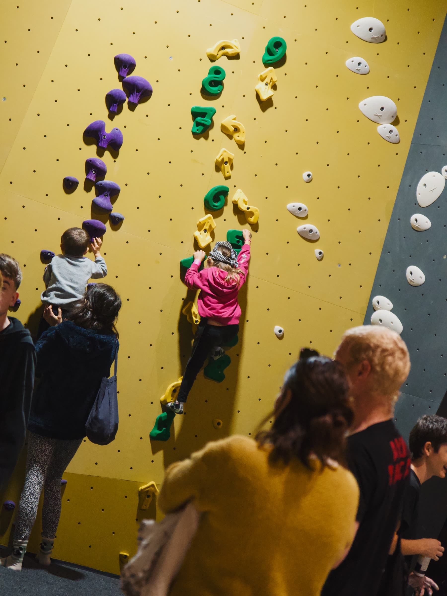
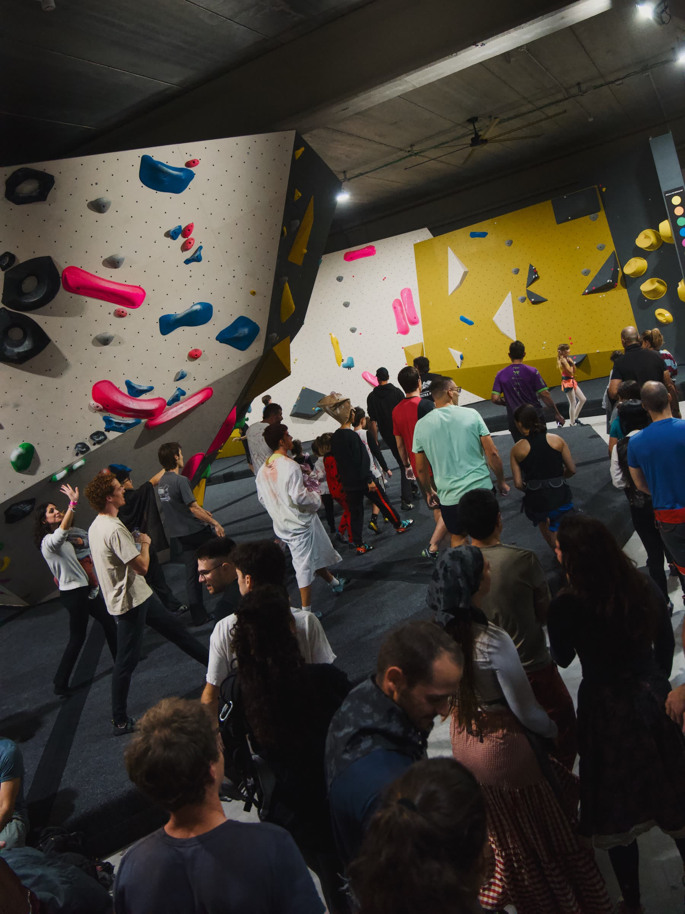

01
Bloc
Sala de bloc nova, estrenada l'octubre de 2026: placa, desplom, sostre i blocs que canviem sovint.
climb / coffee / community
Sant Fruitós de Bages · Manresa
Fes scroll ↓
Fa deu anys vam obrir un pati per escalar a Manresa. Avui en tenim dos, una sala de bloc nova de trinca i una colla que no para de créixer. Perquè sense tu, només som parets.
Bloc i corda per a tots els nivells, des del primer dia fins al projecte que se't resisteix.
Cafeteria dins del pati. S'hi descansa entre intents i s'hi queda després.
Festes, disfresses, paella i DJ. La colla és el que fa que tornis.
Així neix un bloc nou al pati.
Pujant parets des de
El primer pati, al Passatge de la Mercè de Manresa.
«Ets més de platja o de muntanya?»
Montserrat de veritat: de la falda fins a Sant Jeroni, 1.236 m.
A mitja hora del pati.
Sala de bloc nova, estrenada l'octubre de 2026: placa, desplom, sostre i blocs que canviem sovint.

Top rope, primer de corda i autobelay per escalar sense company.
Equipem i muntem línies noves perquè cada visita sigui diferent.
Blocs per provar, perdre, tornar-hi i guanyar. Sempre hi ha algú que t'anima des del matalàs.
Zona d'entrenament al patiGran per escalfar, guanyar força i treballar la mobilitat.

Tarifes per a menors de 13 anys i packs familiars. Els menors sempre amb un adult.
Bateigs, classes particulars i activitats per a grups. Pregunta'ns a recepció.

Climb, coffee, community. La cafeteria tanca mitja hora més tard que la sala.
L'escola, els horaris de cada pati, les tarifes i la colla, cadascú a la seva pàgina.
patis per escalar
anys fent colla
de parets al patiGran
dies a la setmana al patiGran
Primer cop? Omple el registre en línia abans de venir i, au, a escalar.
935 480 718